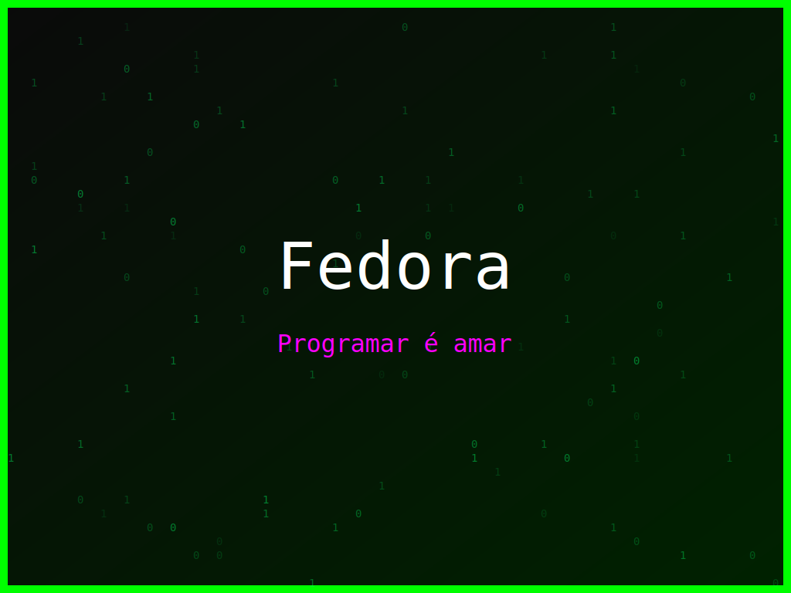

<section class="post-content">


    <div class="details-container">
      
        
        <ul class="details-list">
            <li><strong>Autor:</strong> piolinux</li>
            <li><strong>Descrição:</strong> Arte digital Fedora que compara a programação à magia, com a frase 'Programar é amar'.</li>
            <li><strong>Distro:</strong> Fedora</li>
            <li><strong>Frases:</strong> Programar é divertido, Emacs é vida, Programar é amar</li>
            <li><strong>Tags:</strong> matrix, colorido</li>
        </ul>
        <a href="../galeria.html">Voltar para a galeria</a>||
        <a href="../wallpaper46.svg" download="wallpaper-fedora-magia-da-programação.svg">Baixar Wallpaper</a>
    </div>

</section>
